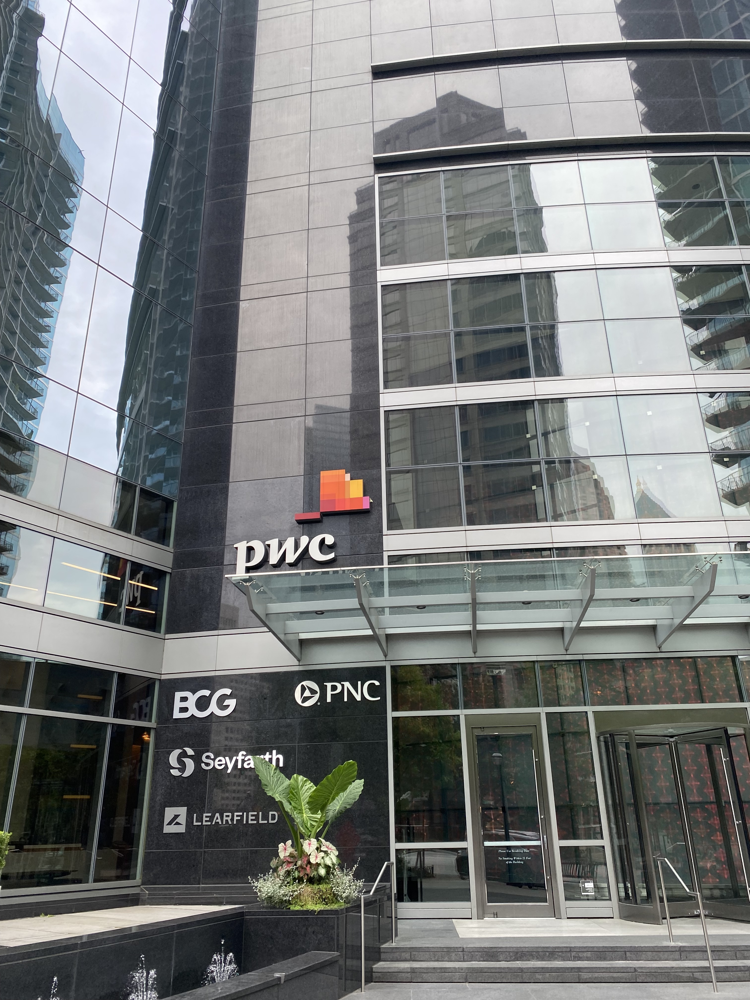

PwC Advance Intern – June 2022 – August 2022
PwC advance internship is an extended client-oriented internship catered to juniors and seniors. During the internship experience, students will develop digital skills and business acumen via leadership, client, and training opportunities.
The duration of the internship experience is 8-weeks. Shadow and community service opportunities are also offered to allow interns to build relationships with their coaches and managers to become successful leaders.
Destiny Ward worked as an Application Evolution Services intern in the Managed Services sector of Consulting Solutions.
Destiny's job was to assist new joiners with onboarding tasks and technology software provided by PwC and make enhancements to existing productions.
Reflection:
PwC has given me a new way to think about agile planning and managerial skills.
I picked up a new skill of quickly adapting to project changes oriented toward client work.
The culture of PwC has allowed me to strengthen my values as a student and employee, but also expand my perspective of my role in the company.